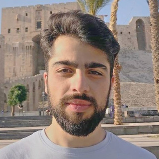

Building language
models that speak
in dialect.
Abdulhai Alali — Data Science & AI graduate student at Maastricht University, working across LLM fine-tuning, generative AI, and computer vision, with a research focus on dialectal Arabic.

The Netherlands
Profile
I'm a Data Science and AI graduate with hands-on experience across machine learning, deep learning, large language models, generative AI, and computer vision. My work spans the full lifecycle of an AI project — from data preprocessing and model design through fine-tuning, evaluation, and deployment.
Most recently, my research has centred on adapting LLMs for dialectal Arabic, sitting at the intersection of natural language processing and the languages I grew up speaking. I'm a Dutch national, and I work fluently across English, Arabic, and Dutch — a background that shapes how I think about language technology that actually serves the people speaking it.
Work Experience
AI Developer
Innervate · Part-time
Developed an AI-driven reporting bot for CURA BHV using generative AI, working on applied LLM systems for real-world reporting workflows. Supervised by Tom Kleijkers.
Data Scientist — Internship
Ministry of Health, Welfare and Sport (CIBG)
Applied data science methods within a government health-data context, contributing to data analysis and modelling work for the CIBG.
Research & Projects
A published workshop paper on dialectal Arabic, alongside research and team projects spanning both the Master's and Bachelor's programme in Data Science and Knowledge Engineering at Maastricht University.
Maastricht University at AMIYA: Adapting LLMs for Dialectal Arabic using Fine-tuning and MBR Decoding
Read the paper on arXiv-
Identifying and analysing political speech by influencers on social media with J. Bauer, A. Panghe, T. Pimenova, G. Rando & S. Suleman · supervised by A. Iamnitchi & T. BertagliaMaster in AI
-
Fly smart, claim smarter: a case-informed chatbot for EU air passenger rights with S. Ashok, S. Aynetchi, J. Beaufils, I. Măniță & S. SulemanACS, Maastricht
-
Development of an AI-driven reporting bot for CURA BHV using GenAI at Innervate · supervised by Tom KleijkersInnervate
-
Machine learning for predicting future stock prices with financial data and visual features supervised by A. Harmä · Dept. of Advanced Computing SciencesJun 2024
-
Extracting data from WNT tables in PDFs with N. Croes, Z. Dong, E. Nazarenko, A. Safi, S. Stokhof & M. YapJan 2024
-
Multi-agent surveillance with I. Cadarso Quevedo, T. Eijck, P. Mohri, C. Paglioni, D. Parii & D. ScharJun 2023
-
An investigation into cage with J. Grapenthin, M. Aviles, T. Bent, Y. Chernyatyeva & H. MekhallalatiJan 2022
-
A Titanic space odyssey! with J. Beuk, E. Banzuzi, S. Bubnys, M. Bergdal, M. Y. Damoiseaux & N. ThielJun 2021
-
Computing chromatic numbers with L. Feiler, G. Kuper, L. Bijman, W. Dobber & I. Cadarso QuevedoJan 2020
Education
Maastricht University
Artificial Intelligence
2024 — 2026Maastricht University
Data Science and Artificial Intelligence
2020 — 2024Get in touch
Open to roles in applied AI & NLP research.